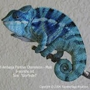
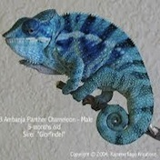

les caméléons
les caméléonsIci nous pensons qu'il n'y aura jamais trop de caméléons. Les caméléons, c'est mignon. Les caméléons, c'est pas con. Les caméléons, ça sent le bonbon. il est prouvé scientifiquement que regarder les caméléons tous les jours améliore la productivité et diminue le stress. Essayez!


 



Vous avez trouvé une photo de caméléon tellement mignonne que vous voulez la partager?Partagez là ici !